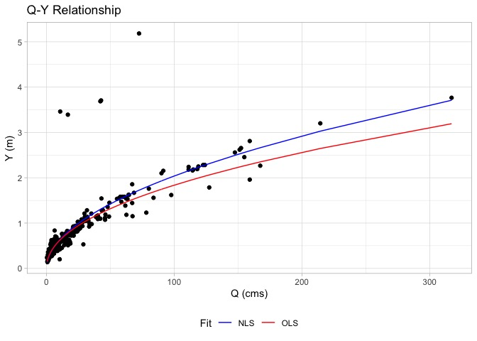
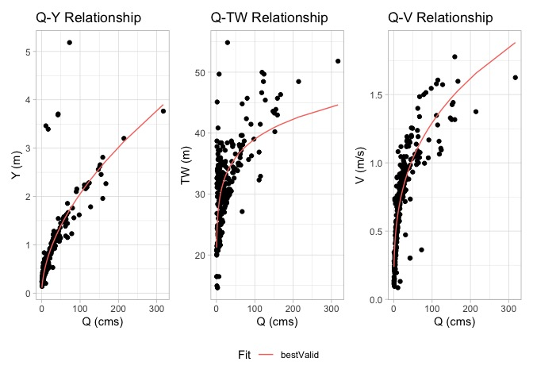
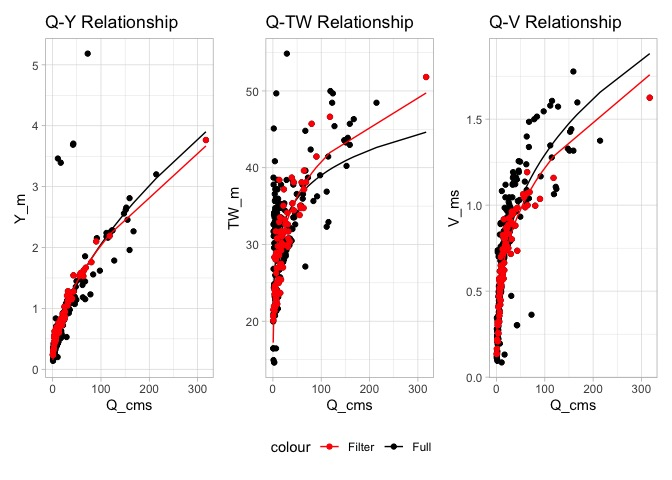

Introduction
The behavior of a river system at a location can be represented as the relationship between discharge (Q), mean depth (Y), mean velocity (V), and mean top width (TW). If you have these measurements over a long period of time, a relationship between how much water (Q) is in the channel and the corresponding Y, V, and TW can be established. The idea of ‘at-a-station hydraulic geometry’ (AHG) suggests three power laws can adequately describe these relations (Leopold and Maddock 1953):
Each single relationships describes a component of the channel behavior (see section Fitting single relationships). For example, the Q-Y relation is similar to the traditional rating curve that relates stage to discharge where stage is given as a height of water (H) above a datum (Ho).
Traditionally, each relationship has been fit independent of one another using ordinary least square regression (OLS) on the log transformed time series of the respective components.
Some research has moved beyond pure OLS fitting with a (typically) singular focus on the rating curve relation. For example the Texas Water Resources Institute suggests a non linear least squares regression (NLS) (here), and Bayesian hierarchical modeling have been shown in other cases to be beneficial ((Hrafnkelsson et al. 2022), R implementation here)
When trying to fit a hydraulic system - or - all three equations - there are additional considerations . Notably continuity dictates that no water is gained or lost such that:
and:
Critically, neither OLS or NLS solvers can ensure this characteristic of the solution. (see Fitting hydraulic systems and this article). Instead, this can be achieved by either
- Preprocessing data based on thresholds (see Enzminger (2023) and Afshari et al. (2017)) (see AHGestimation functions in here), or
- as we suggest in this package, using a evolutionary solver - along with OLS and NLS fits - to optimally solve relationships in accordance with each other (see detailed description here).
The aim of this package is to provide increased AHG fitting flexibility, that ensures mass conservation in hydraulic systems, and optimal curve fitting for single relations.
AHGestimation
Using USGS field measurements at the gage (National Water Information System or NWIS site) located on Nashua River at East Pepperell, MA we can illustrate 4 capabilities this package offers:
- Fitting single relations with OLS and NLS (Fitting single relationships)
- Estimating hydraulic system with a mass conserving ensemble fitting method (Fitting hydraulic systems)
- Data preprocessing (removing outliers based on defined criteria) (Data Filtering)
- Deriving cross section shapes and traits from the AHG fits (Hydraulic Shape Estimation).
The example data is included in the package, and its development can be seen here.
library(AHGestimation)
glimpse(nwis)
#> Rows: 275
#> Columns: 6
#> $ siteID <chr> "01096500", "01096500", "01096500", "01096500", "01096500", "01…
#> $ date <date> 1984-11-14, 1985-01-04, 1985-05-06, 1985-06-26, 1986-01-09, 19…
#> $ Q_cms <dbl> 9.740995, 11.893076, 10.817036, 1.945367, 11.355056, 21.435853,…
#> $ Y_m <dbl> 0.5276643, 0.6263470, 0.5952224, 0.2400299, 0.5920151, 0.857459…
#> $ V_ms <dbl> 0.652272, 0.682752, 0.563880, 0.332232, 0.606552, 0.902208, 0.4…
#> $ TW_m <dbl> 28.3464, 27.7368, 32.3088, 24.3840, 31.6992, 27.7368, 31.6992, …
Fitting single relationships
The AHGestimation::ahg_estimate(...) function can be used to fit single relationships using both NLS and OLS solutions. Below we fit the Q-Y relation by passing a data.frame with the column names Q and Y. More columns could be included in the input, but only those with Q, Y, V, and/or TW are used.
(sf = nwis %>%
#input column names must be Q,Y,V and/or TW
select(date, Q = Q_cms, Y = Y_m) %>%
ahg_estimate())
#> type exp coef nrmse pb method
#> 1 Y 0.5190562 0.1867125 7.90 -0.23 nls
#> 2 Y 0.4794202 0.2018376 8.11 -5.58 olsThe returned object rank sorts the solutions based on the nrmse of the simulated Y values compared to the input data. For convenience, the pBias is also reported. Below, we can see the variation in the NLS (blue) and OLS (red) solutions.

When 2 relationships (e.g. Q-Y and Q-V) are passed to ahg_estimate(...) the default behavior is to return a single solution based on the minimum nrmse. Since only 2 of the 3 hydraulic traits are passed, mass conservation cannot be checked here.
(nwis %>%
#input column names must be Q,Y,V and/or TW
select(Q = Q_cms, Y = Y_m, V = V_ms) %>%
ahg_estimate())
#> V_method Y_method tot_nrmse V_nrmse Y_nrmse V_coef Y_coef V_exp
#> 1 nls nls 0.6787807 0.2312688 0.4475119 0.289889 0.1867125 0.3246968
#> Y_exp
#> 1 0.5190562If you would like all fits (OLS and NLS), the full_fitting parameter can be set to TRUE.
(nwis %>%
#input column names must be Q,Y,V and/or TW
select(Q = Q_cms, Y = Y_m, V = V_ms) %>%
ahg_estimate(full_fitting = TRUE))
#> $full_fits
#> V_method Y_method tot_nrmse V_nrmse Y_nrmse V_coef Y_coef V_exp
#> 1 nls nls 0.6787807 0.2312688 0.4475119 0.2898890 0.1867125 0.3246968
#> 2 ols ols 0.7127124 0.2534246 0.4592878 0.2178592 0.2018376 0.4056932
#> Y_exp
#> 1 0.5190562
#> 2 0.4794202
#>
#> $summary
#> V_method Y_method tot_nrmse V_nrmse Y_nrmse V_coef Y_coef V_exp
#> 1 nls nls 0.6787807 0.2312688 0.4475119 0.289889 0.1867125 0.3246968
#> Y_exp
#> 1 0.5190562Fitting hydraulic systems
When we have data for all three hydraulic relationships we can ensure the solutions found meet continuity/conserve mass.
In this mode the OLS and NLS models are fit first, and if continuity is not met in best solution (e.g. lowest nmse), then an Evolutionary Approach (nsga2; Mersmann (2020)) is implemented (see this article for more details).
Doing so produces three unique fits for each relationship (27 total combinations). These are crossed to identify the best performing solution that meets continuity at a prescribed allowance. The allowance specifies the amount that each continuity expression can deviate from 1. More on this can be found at the vignette here
As before, the results are rank ordered by minimum nrmse and viability (viable = does the solution meet continuity within the prescribed allowance?)
(x = nwis %>%
select(Q = Q_cms, Y = Y_m, V = V_ms, TW = TW_m) %>%
ahg_estimate(allowance = .05))
#> V_method TW_method Y_method c1 c2 viable tot_nrmse V_nrmse TW_nrmse
#> 1 nls nls nsga2 1.048 0.997 TRUE 0.8478575 0.2312688 0.1665577
#> 2 nsga2 nsga2 nsga2 1.042 0.997 TRUE 0.8480158 0.2314216 0.1665631
#> 3 ols ols ols 0.994 1.000 TRUE 0.8799006 0.2534246 0.1671882
#> 4 nls nls nls 1.234 0.960 FALSE 0.8453383 0.2312688 0.1665577
#> Y_nrmse V_coef TW_coef Y_coef V_exp TW_exp Y_exp
#> 1 0.4500311 0.2898890 22.79344 0.1586042 0.3246968 0.1166774 0.5560598
#> 2 0.4500311 0.2874600 22.86035 0.1586042 0.3248796 0.1160671 0.5560598
#> 3 0.4592878 0.2178592 22.61538 0.2018376 0.4056932 0.1145234 0.4794202
#> 4 0.4475119 0.2898890 22.79344 0.1867125 0.3246968 0.1166774 0.5190562
#> condition
#> 1 bestValid
#> 2 nsga2
#> 3 ols
#> 4 nlsOverall an combination of the NLS and nsga2 provides an error minimizing, viable solution:

Data Filtering
Due to the volatility of river systems, hydraulic data is often very noisy. While the ahg_estimate tool is intended to reduce this noise and produce a mass-conserving hydraulic fit, it is also possible to filter the data prior to fitting. The range of data filtering options provided are documented in the data-filtering vignette and an example is provided below:
filtered_data = nwis %>%
select(date, Q = Q_cms, Y = Y_m, V = V_ms, TW = TW_m) %>%
# Keep the most recent 10 year
date_filter(year = 10, keep_max = TRUE) %>%
# Keep data within 3 Median absolute deviations (log residuals)
mad_filter() %>%
# Keep data that respects the Q = vA criteria w/in allowance
qva_filter()
(ahg_fit = ahg_estimate(filtered_data))
#> V_method TW_method Y_method c1 c2 viable tot_nrmse V_nrmse TW_nrmse
#> 1 nls nls nls 1.012 1 TRUE 0.3443460 0.1434527 0.1022593
#> 2 nls nls nls 1.012 1 TRUE 0.3443460 0.1434527 0.1022593
#> 3 ols ols ols 0.998 1 TRUE 0.4456573 0.1908811 0.1039403
#> Y_nrmse V_coef TW_coef Y_coef V_exp TW_exp Y_exp
#> 1 0.09863406 0.2812859 18.50099 0.1945125 0.3181974 0.1717161 0.5099640
#> 2 0.09863406 0.2812859 18.50099 0.1945125 0.3181974 0.1717161 0.5099640
#> 3 0.15083589 0.2099045 19.19159 0.2478285 0.4124677 0.1567236 0.4312825
#> condition
#> 1 bestValid
#> 2 nls
#> 3 olsUltimately we recommend selecting fits that conserve mass (viable = TRUE) and has the lowest error (any of tot_nrmse, V_nrmse, TW_nrmse, or Y_nrmse) depending on the use case.
When the data is effectively filtered we see NLS can provide an error minimizing, valid solution for the system that is quite different then the full data fit. Further, the nsga2 algorithm did not need to be invoked:

Hydraulic Shape Estimation
Lastly, a range of functions have been added to extend the AHG parameters into cross section hydraulics and geometry. These come primarily from (Dingman and Afshari 2018) and are described in detail here
# Compute hydraulic parameters
(hydraulic_params = compute_hydraulic_params(ahg_fit))
#> r p d R bd fd md
#> 1 2.969809 0.6239605 5.822852 1.336722 0.1717371 0.5100265 0.3182364
#> 2 2.969809 0.6239605 5.822852 1.336722 0.1717371 0.5100265 0.3182364
#> 3 2.751866 0.9563746 6.383682 1.363390 0.1566494 0.4310783 0.4122723
# Estimate roughness
# Slope is taken from the NHD reach associated with our gage
compute_n(filtered_data, S = 0.01463675)
#> [1] 0.1385395Of particular note, the r value describes the theoretical shape of the channel ranging from a triangle (r = 1) to a rectangle (r = ∞). When paired with a TW and Depth (here assuming max of the record) a generalized cross section can be derived. The returned data.frame provide a point index (from left bank looking upstream) the associated relative x and absolute Y position, and the cross sectional area for that Y.
cs = cross_section(r = hydraulic_params$r,
TW = max(filtered_data$TW),
Ymax = max(filtered_data$Y))
glimpse(cs)
#> Rows: 90
#> Columns: 4
#> $ ind <int> 1, 2, 3, 4, 5, 6, 7, 8, 9, 10, 11, 12, 13, 14, 15, 16, 17, 18, 19,…
#> $ x <dbl> 0.0000000, 0.5730337, 1.1460674, 1.7191011, 2.2921348, 2.8651685, …
#> $ Y <dbl> 0.87421950, 0.77874613, 0.77874613, 0.72304562, 0.63446965, 0.6344…
#> $ A <dbl> 32.842929, 28.051288, 28.051288, 25.351314, 21.214316, 21.214316, …
History
The development of this package began as a graduate school project between friends at UC Santa Barbara and UMass Amherst following the 2017 NOAA OWP Summer Institute and clear evidence channel shape may be a limiting factor in National Water Model Performance. It has since evolved to provide an open source utility for robust large scale data synthesis and evaluation. Funding from the National Science Foundation (Grants 1937099, 2033607) provided time to draft Johnson et al. (2022) and apply an early version of this software to the [Continental Flood Inundation Mapping (CFIM) synthetic rating curve dataset (Liu and Maidment 2020). Funding from the National Oceanic and Atmospheric Administration’s Office of Water Prediction supported the addition of data filtering and hydraulic estimation, improved documentation, and code improvement We are grateful to all involved.
Contributing
First, thanks for considering a contribution! We hope to make this package a community created resource!
- Please attempt to describe what you want to do prior to contributing by submitting an issue.
- Please follow the typical github fork - pull-request workflow.
- Contributions should be tested with
testthatby runningdevtools::test(). - Code style should attempt to follow the tidyverse style guide.
- Make sure you use
roxygenand rundevtools::check()before contributing.
Other notes:
- Consider running
goodpractice::gp()on the package before contributing. - Consider running
devtools::spell_check()anddevtools::document()if you wrote documentation. - Consider running
devtools::build_readme()if you made any changes. - This package uses pkgdown. Running
pkgdown::build_site()will refresh it.